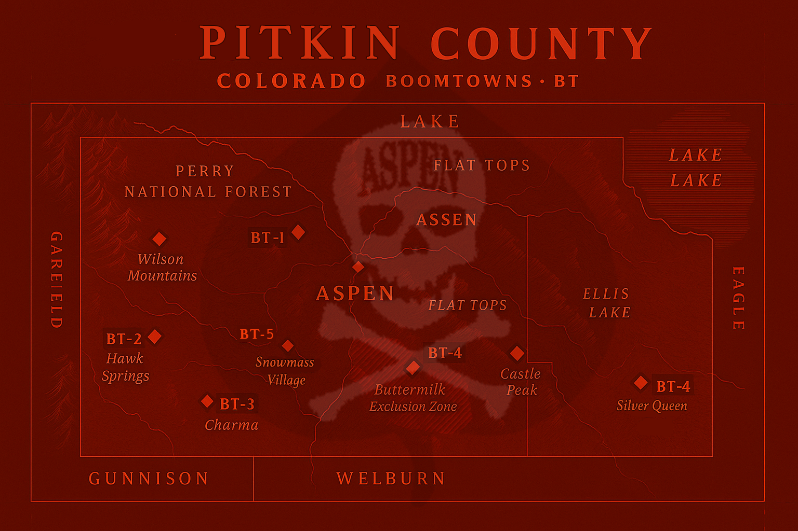
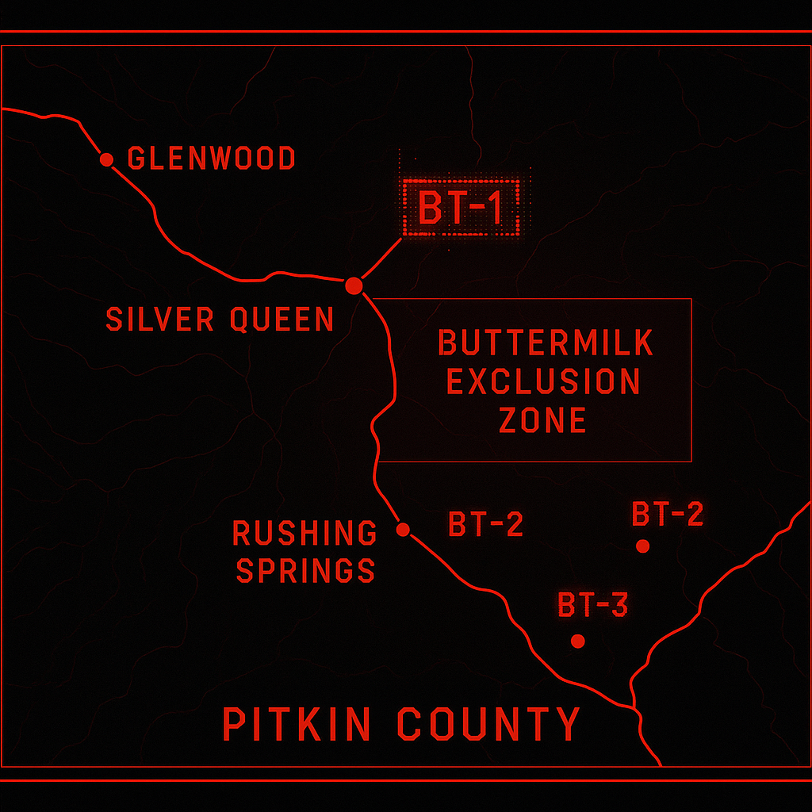

ZONAL OVERLAY

Unauthorized presence within the Buttermilk Exclusion Zone will trigger automated countermeasures in accordance with the X-Games Incident (1978) and Field Report 17.
Failure to comply with internal policy will result in immediate revocation of clearance, asset seizure, and activation of failsafe protocols.
Schematic Overlay

Travel into any Boomtown (BT-1 through BT-5) must be unanimously approved by the ADC Double Black Diamond Directorate.
Unauthorized movement, data extraction, or surface contact constitutes a direct violation of ADC Directive 930-B.
[00:14:03] PLEASE REVIEW YOUR ADC HANDBOOK FOR DIFFUSAL INSTRUCTIONS.
[00:14:11] LOCAL ZONES SCRAMBLED .: SYNC LOST .::....:..
[00:14:21] Always say please and thank you to the strange creatures in the woods.
[00:14:30] Buttermilk Exclusion Zone - CONTAINMENT SEAL VERIFIED
[00:14:58] Suck my [redacted] -- Agent 27
[01:56:09] {Agent 27 has been terminated}